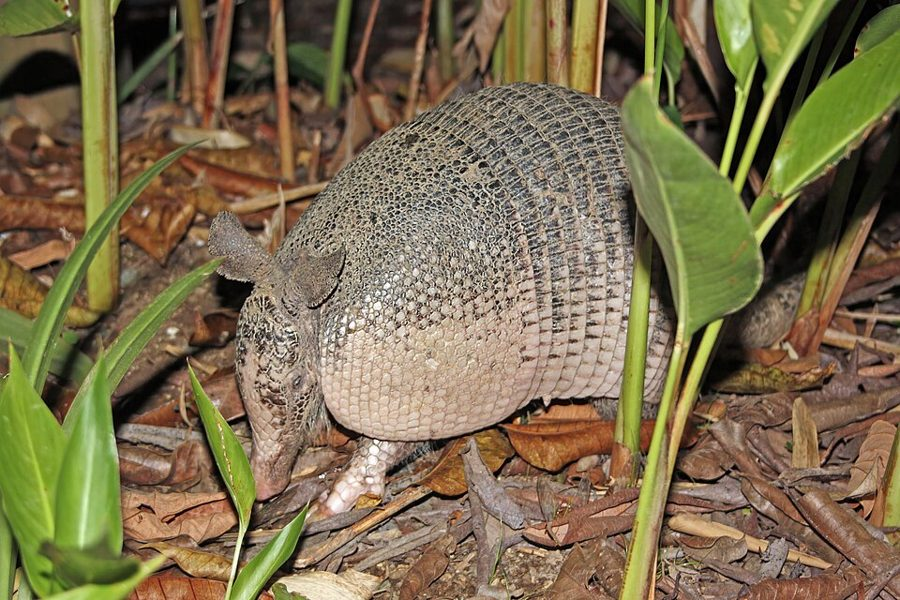
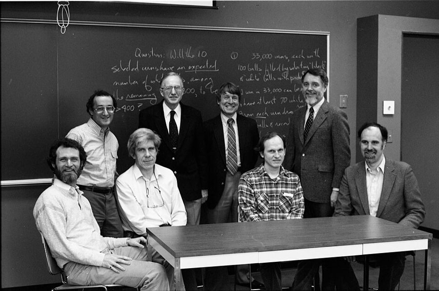
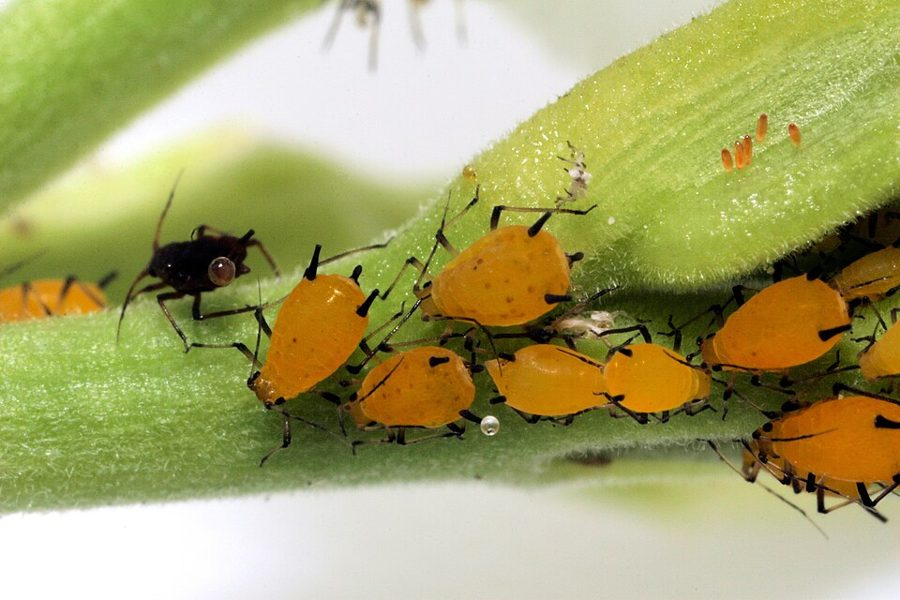
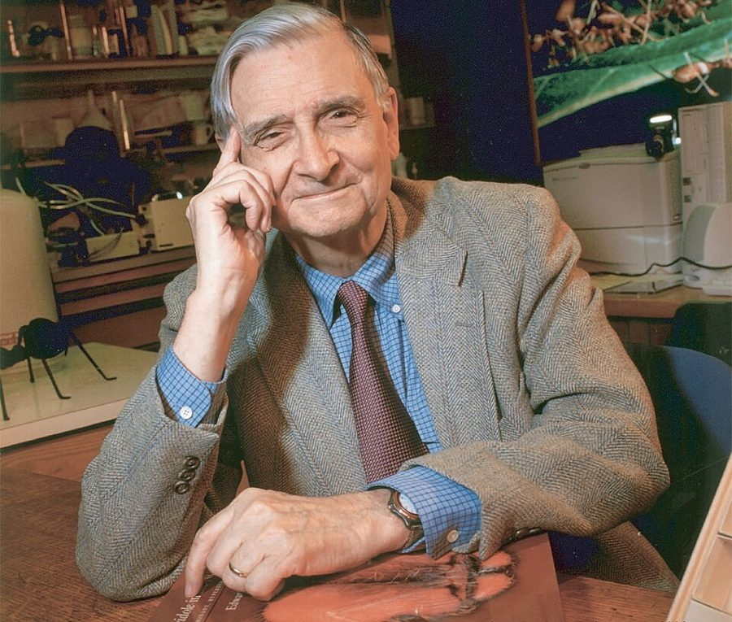
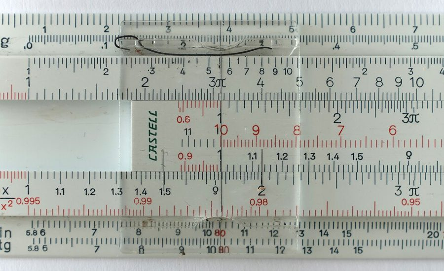

sloppy language
… our sloppy language back into respectable terms …
随便的说法（对「正规的说法」）
作者的保证：拟人的说法随时可以翻译回严格的说法。全书读到「基因想要」都要记得这层。
第 6 章的前半。第 5 章为了讲打斗，把整个个体当作各为自己的机器；这一章换个角度：一个基因的拷贝散在许多身体里，帮别人有没有可能就是基因在帮自己？Dawkins 先用白化基因和「绿胡须」做思想实验，再借 Hamilton 的理论，把「亲属之间共有某个基因的机会」变成一个能算的数，最后让一只发现蘑菇的动物替我们算一笔账。读的时候抓两条线：亲缘系数算的究竟是什么，以及「动物像会算一样」是什么意思。

第 5 章最后一段说：讲打斗时把个体当作独立的自私机器很方便，可对象换成兄弟姐妹、堂表兄弟、父母子女，这套说法就不灵了，因为亲属身上有大量相同的基因，下一章再讲。这一页就从这里接上。第 1 段把「自私的基因」重新说成一段 DNA 散在各处的全部拷贝，回指第 2 章的原始汤；第 4 段的「基因有多种效果」回指第 3 章。第 11 段说某些昆虫不适用这套算法，那是第 10 章的事；第 19 段说亲代照顾为什么比手足照顾常见，下一页才讲。
动物为亲属冒险、甚至送命，自私的基因怎么从中得到好处？好处有多大，能不能算出来？
读的时候带着这几个问题。不用先找答案，读完回来对照「检查一下理解」。
这一页先问一个大问题，再一步步把它变成算术。§1 是思想实验：基因怎样认出别的身体里的自己，作者先用「基因想要」的拟人说法，到第 3 段又主动暂时放下，换成正规的说法。§2、§3 是全页最硬的地方：先假设基因稀有，算出兄弟共有的机会，再给出一条按代数算亲缘的简便法则，读的时候手边放张纸画家谱。§4 先拿双胞胎和犰狳把法则推到极端，接着突然插进一段对 E. O. Wilson 的批评，读到这里会觉得跳，第 22 段作者自己也为这段「小小的抨击」道歉。§5 把「必死、救活」换成统计风险和预期寿命，再回应「动物怎么会算」。§6 用一个蘑菇的算例走一遍，最后退回基因的语言。
作者落在哪：亲属身上有同一个基因的机会可以算出来，所以为亲属付出，在基因的账上可以是划算的；亲代照顾只是其中一例，这和类群选择是两回事。动物不必真的会算，只要被预先编好、表现得像算过。
这一页是原书第 6 章的第 1–6 节。原书各章没有小标题，粗体的节名是本站起的，下面是这一节第一段开头的几个词，在电子书里搜它就能跳过去。读完打个勾。
先把这一页用到、作者默认你懂的几个概念讲一遍。讲的是概念本身，作者拿它推出什么，读原书时自己看。前几章讲过的基因库、类群选择、生存机器、「某种行为的基因」，点进去看。
设想一个基因同时做两件事：让带着它的身体长出一个显眼的记号（比如一把绿胡子），又让身体特别善待带着这个记号的个体。这样它就能认出并帮助别的身体里的自己的拷贝，不管对方是不是亲戚。这个想法在 Hamilton 1964 年的论文里已有雏形，「绿胡须」这个名字出自这本书。难点在于：记号和偏爱是两件互不相干的事，要由同一个基因同时管住。打个比方：一段代码既给自己发出的请求打上标记，又只给带这个标记的请求放行，它照顾的就只是自己的副本。译本：「绿胡须利他行为效果」
在这一页：第 4 段起名，第 5 段又设想「正在救人」本身也能当记号。它是作者讨论「基因怎样认出自己」时的第一个候选。
亲属之间的利他行为所受的那种自然选择：关系越近，选择越强。名字是 Maynard Smith 1964 年起的，理论来自 Hamilton 同年的论文。今天通行叫亲缘选择。它容易和两样东西混：一是类群选择，后者说的是整群整群的存亡差别；二是「只对自家人好」的直觉。亲属选择没有家里家外的硬界线，只有亲缘远近的连续变化：越近的亲属越可能得到帮助，远到一定程度就和陌生人一样。这不是说要按亲疏把好处切成大小不等的份，1989 年的注 32 专门纠正过这种读法。父母养育子女，在遗传上也属于它。
在这一页：第 20 段介绍这个词，紧接着批评 E. O. Wilson 书里的定义；第 21 段说那个定义把子女排除在亲属之外。
一个让个体去帮别人的基因，能在种群里扩散的条件：受益者得到的好处 B 乘上两人的亲缘系数 r，大于帮忙者自己付出的代价 C。好处和代价都按将来能留下多少后代来算，不是按快乐或钱。这条不等式出自 Hamilton 1964 年的论文，「汉密尔顿法则」是后来通行的叫法。和它配套的概念叫广义适合度（inclusive fitness）：一个个体的成绩，除了自己的后代，还要加上它帮亲属多出来的后代乘以 r。打个比方：掏自己的钱去帮另一家公司，值不值，要看你在那家公司占多少股。
在这一页：书里没给它起名。第 24 段用保险精算的话把这条不等式说了一遍，第 27 段写成一长串加权求和，第 29 段是一道算例。
先猜：你和堂表兄弟的亲缘系数，比你和曾孙的大，还是小，还是一样？为救堂表兄弟而送命，至少要救下几个才不亏？再在下面的家谱上点人验证。
三块。上面是一张家谱：依次点两个人，看他们最近的共同祖先是谁、代距是几、亲缘系数怎么算出来。中间按汉密尔顿法则判断：为救亲属冒险，这种基因会不会扩散。下面是第 29 段那种「发现了食物，叫不叫」的加权算账。先直接点家谱上的人。
需要浏览器打开脚本才能运行。
这个模拟器只算这一页讲的：亲缘确定、所有人寿命一样。亲缘只能估计、拿不准时怎么办（第 33 段起），是下一页的事。家谱里没有近亲结婚，因为作者在第 11 段说过，那种情况这条法则不适用。
按在书里出现的顺序排，标题前是节号。只讲到读懂这一页需要的程度。

第 6 段说，亲属之间也该有利他，是 Fisher、Haldane，尤其是 Hamilton 想到的。第 7 段说 Hamilton 1964 年在《理论生物学杂志》上的两篇论文（《社会行为的遗传演化》上下篇）是社会动物行为学最重要的文献之一，可 1970 年出版的两本动物行为学教科书，索引里连他的名字都没有。作者承认论文用了不少数学，他用文字讲，代价是简化。Hamilton 后来和 Axelrod 合作研究合作的演化，那是第 12 章的事。
美洲的一种犰狳，就是页首照片里那种。它一胎通常生四只，四只由同一个受精卵分裂而成，是同卵四胞胎。第 18 段作者说，他没听说小犰狳有什么英勇献身的事，但有人指出它们之间应当有强烈的利他，值得有人去南美看一看。1989 年的注 31 说，犰狳这边没有消息。后来的野外研究见「对照今天」。

蚜虫能无性生殖，一株植物上的一群蚜虫往往是同一只雌虫的克隆。注 31 说，日本昆虫学家青木（Shigeyuki Aoki）1977 年在一种日本蚜虫里发现了不育的「兵蚜」：它们停在幼虫阶段，前腿粗大、头上有向前的角，专门攻击捕食者，常常送命。兵蚜和被它保护的姐妹基因完全相同，作者说在某些方面，这是 Hamilton 理论在现实中最干净的例子。

第 20 段批评的是 Wilson 1975 年的《社会生物学：新的综合》。作者先夸这本书「在别的方面令人钦佩」，再说它把亲属选择定义成类群选择的一个特例，书里的图把它画在个体选择和类群选择之间；第 21 段说它还把子女排除在亲属之外。1989 年的注 33 报告，Wilson 1978 年的《论人性》删掉了「子女除外」。

第 25 段说，Haldane 1955 年的一篇文章比 Hamilton 早一步，设想过救溺水近亲的基因会扩散；作者转引他的话：自己两次把可能淹死的人拉出水，根本没时间算。流传很广的「我愿为两个兄弟或八个堂表兄弟献身」不在这本书里，据考证多半是别人转述时改成的直接引语，别安到作者头上。作者接着用计算尺和接球打比方。
注 34 驳的是美国人类学家 Sahlins 1976 年的《生物学的利用与滥用》。Sahlins 说，世界上很多语言没有分数，狩猎采集者往往只数到三，动物更不可能算出堂表兄弟的 r。作者引自己 1979 年的文章《关于亲属选择的十二个误解》回答：蜗牛壳是一条精确的对数螺线，蜗牛并不查对数表；大树底部板根的大小接近力学上的最优，树也不会算。
按节排，每节前面是分节地图里的节名。标着「每个字都认识」的，是熟词生义、习语和反话，最容易读错。灰色的那几个字是原句里的位置，在电子书里搜它就能找到。
对着中译本（40 周年增订版）读的时候看这一节。下面是译本这几节和这一页尾注里会让人读错的地方：灰字是英文原文那一处的几个词，在英文电子书里搜它；方框里是译本的原句，在译本电子书里搜它。措辞别扭但意思没错的不收。全书的勘误汇总在译本勘误。
… What is the selfish gene …
译本：「基因种族」
章名是仿 gamesmanship（比赛中耍小花招取胜的本事）造的词，大意是「基因的取胜之术」，讲基因怎样借亲属的身体占便宜。和人种、种族毫无关系。
… less arbitrary than a green beard …
译本：「尽管这个标志不像绿胡须那样荒诞不经」
arbitrary 是「随意挑的、和要表达的东西没有内在联系」。原文说：「正在救人」这个记号比绿胡须更贴近它要标示的利他基因，但仍不太可信。
… have a greater than average chance …
译本：「我们很容易证明，近亲多半共有同样的基因」
原文只说近亲共有某个基因的机会高于平均，没说「多半」。这正是注 30 要澄清的地方：亲缘算的是基线之上多出来的那一份。
… most important contributions to social ethology …
译本：「有关社会个体生态学的论文」
ethology 是动物行为学，同一段的「个体生态学家」也是 ethologists（动物行为学家），和第 5 章同一个错。注 29 里的「生态学家们」原文没有。
… ancestors of a pair of first cousins …
译本：「第一代堂兄弟的共同祖先」
first cousin 是祖父母相同的同辈，堂亲、表亲都算；second cousin 共有曾祖辈，third cousin 共有高祖辈。「第二代」不是指下一代。全章和尾注都这样译。
… If the generation distance is 3 …
译本：「如果代距是3，那么指数是」
译本的「（½）3」「（½）g」丢了上标，是 1/2 的 3 次方（1/8）、1/2 的 g 次方，不是「二分之一乘三」。
… born in a litter of identical quadruplets …
译本：「是一胎4只的」
原文是一窝同卵四胞胎。漏了「同卵」，这个例子就没意义了：作者正是要说四只的基因完全相同。
… strong altruism is definitely to be expected …
译本：「有人指出它们肯定有某种强烈的利他行为」
原文是有人指出，按理论应当预期它们有强烈的利他；作者紧接着说没听说过这类事，号召人去看。译本把预期写成了事实。
… But the whole point of Hamilton’s argument …
译本：「但威尔逊论点的全部含义是」
原文：Hamilton 论证的要害在于家里家外没有硬界线，只是概率问题。这句是作者拿来反驳 Wilson 的，安到 Wilson 头上，整段就读反了。
… human decisions based on outdated information …
译本：「他们的基因根据过时的资料」
原文是类比：人凭过时的信息做的决定往往也是错的。译本多出「他们的基因」，把类比变成了关于人类基因的论断。
… published in 1978, tried to argue …
译本：「对1978年出版的《社会生物学》一书」
原文：一位人类学家在 1978 年发表的一篇猛烈攻击「社会生物学」的文章里如何如何。1978 年的是那篇文章；Wilson 的《社会生物学》是 1975 年出的。
… Altruism is expected towards individuals whose relatedness …
译本：「利他主义基因更容易在那些相关性比」
原文：可以预期，利他行为指向亲缘高于基线的个体，不管基线是多少。译本说成利他基因「更容易在其中找到」。前一句的「程度较小」原文是说别的物种也共享一部分基线。
… which is a definite and positive error …
译本：「而这是一个确定的正向误差」
positive 在这里是「确确实实的」。原文说：用「共有百分之几的基因」来讲亲缘，是彻头彻尾的错误，和统计上的正向误差无关。
… It has long been known that aphids …
译本：「蚜虫（也就是青梅子）」
greenfly 是英国人对绿色蚜虫的俗称，括号里只是举例，和「青梅子」没有关系。
… a quite separate fallacy of my own …
译本：「留下了一个非常小的谬误」
quite separate 是「完全是另一回事」：作者说措辞不当，引进了一个和他当时要论证的事无关的谬误。
… still lack a gut understanding of …
译本：「缺少去理解亲属选择究竟是什么的勇气」
gut understanding 是凭直觉、打心底的领会。原文说很多生物学家还没真正吃透亲属选择，和勇气无关。
… Kin selection follows from the fundamental assumptions …
译本：「亲属关系严格遵从新达尔文主义的基本假设」
这一句和前一句的主语都是 kin selection（亲属选择），译本两处译成「亲属关系」，读起来像在说亲戚关系。
… we must temporarily abandon our metaphor of the gene as a conscious agent, because in this context it becomes positively misleading.— §1 第 3 段。本站译：我们得暂时放下「基因是有意识的行动者」这个比喻，因为在这里它简直是误导。
全书常被误读成「基因有意图」，这句是最好的反证：作者自己说比喻在哪里失效。白化基因不会「想」帮其他白化的人；只是碰巧有这种效果的基因会变多，而要有这种效果，一个基因得同时管肤色和偏爱两件事，这才是它不太可能的原因。读这一章后面所有「基因想要」「动物盘算」，都按这句翻译回去。
Kin selection is emphatically not a special case of group selection.— §4 第 20 段。本站译：亲属选择绝对不是类群选择的一个特例。
口气很重，是在下判断。关键词是 emphatically 和原书斜体的 not。作者的理由在前几句：家庭和非家庭之间没有界线，只有亲缘远近的连续变化。紧跟的下一句说它是基因选择的特殊后果。这句常被引来代表「基因视角」反对群体选择的立场，但它说的只是亲属选择的归属；群体选择本身后来怎样，见「本站怎么看」。
正文里的星号是 1989 年第二版加的，点了跳到书后的尾注。下面是这一页的每个星号：注里说了什么，值不值得现在就点开。英文是星号前紧挨着的几个词，在电子书里搜它就能找到那个星号。
… text-books of ethology, both published in 1970).*
只有几句：Hamilton 1964 年的论文早已不被忽视。它先被冷落、后被承认的过程可以定量地研究，作者把它当作一个觅母在觅母库里传开的案例，放到第 11 章的尾注里讲。现在可以跳过。
… in the gene pool as a whole.*
作者承认，假设基因稀有是为了好讲的取巧，Hamilton 的结论不管基因稀有常见都成立。更要紧的是第二段：同种的任意两个个体本来就共有九成以上的基因，说兄弟的亲缘是 1/2，指的是基线之上多出来的一半。他批评一位人类学家 1978 年的说法：人人共有 99% 的基因，就该对所有人利他。一定要点开。
… South America to have a look.*
犰狳那边没有进展，倒是蚜虫有了惊人的发现：青木 1977 年找到不育的兵蚜（见「书里的人和研究」）。兵蚜和被保护的姐妹是克隆，利他基因帮到自己拷贝是确定的，不只是有一定概率。注的后半讨论蚜虫算不算社会性昆虫，作者说这只是用词之争。值得读。
… a special case of group selection.*
第一版说二代堂表兄弟应得到子女的 1/16「那么多」利他。S. Altmann 指出这错了：一块蛋糕不该按亲疏切给每个亲戚，近亲在场时整块都该给最近的那个。第二版改成受到利他的「可能性」是 1/16。作者说两种选择的混淆到 1989 年可能更糟了。电子书里注中引的第一版原话，1/16 显示成了字母 A。
… offspring: they don’t count as kin!*
Wilson 在《论人性》里删去了「子女除外」，作者特意声明不是他的功劳。但 Wilson 补充说，通常只在涉及子女以外的亲属时才叫亲属选择。作者说这确实是生物学家的习惯用法，恰好说明很多人仍把亲属选择当成个体选择之外的额外东西，而它是新达尔文主义的直接推论。可以跳过。
… machine to do, especially in a hurry!*
驳人类学家 Sahlins：后者说很多民族的语言里没有分数，动物更不可能算出 r（见「书里的人和研究」）。作者引自己 1979 年的答复，又补了大树板根的例子，最后反问：为什么只对亲属选择提这种反对？例子好记，值得读。
读完这一页的几节再看。下面是作者在这几节里的论点，由本站按论点重新组织，不按原书的顺序；每条下面是依据所在的段落，拿不准就回书里那几段再读一遍。
自私的基因指一段 DNA 散在各处的全部拷贝。能帮到别的身体里的拷贝的基因可以变多，这时个体利他就是基因自私。作者说「基因想要」只是比喻，在这里会误导：基因不想，只是碰巧有这种效果的会变多。靠绿胡须这类记号认拷贝理论上可能，但他认为不太可能。
§1 第 1–5 段亲属共有某个基因的机会高于平均。先假设基因稀有，兄弟共有的机会是 1/2；一般的亲缘按代距算，每一步乘 1/2，几位最近的共同祖先就加几份。由此，为救亲属送命，要救下多于 2 个兄弟、4 个半同胞或 8 个堂表兄弟才划算。（1989 年的注 30 说，稀有的假设是取巧，亲缘指的是基线之上的那一份。）
§2 第 6–10 段，§3 第 11–17 段照顾孤弟和照顾子女，亲缘都是 1/2，遗传上没有区别。家里家外也没有硬界线，只有亲缘远近；所以亲属选择是基因选择的推论，不是类群选择的特例。他据此批评 Wilson 把亲属选择算作类群选择、又把子女排除在亲属之外。（第 20 段的「1/16 的可能性」是 1989 年改的措辞，第一版写的是「1/16 那么多利他」，注 32 认了错。）
§4 第 19–21 段，注 32、注 33现实里没有必死和必救，只有死亡的概率；被救的人寿命也长短不一。所以利他行为要演化，利他者的净风险必须小于受益者的净收益乘以亲缘，风险和收益都按将来繁殖的前景加权。只要自己的风险够小，连三代堂表兄弟也可能值得救。
§5 第 22–24 段接球的人不必会解微分方程，用计算尺的人不必懂对数；基因库里留下的，是让身体表现得像做过这番加权计算的基因。蘑菇的例子只是演示。这些「估计」基于过去的条件，条件剧变时会出错；真实的动物离理想的计算有多远，要靠野外观察和实验去查。
§5 第 25–28 段，§6 第 29–32 段，注 34合起来：这一页把「自私的基因」和「利他的个体」接上了：帮亲属，在基因的账上可以就是帮自己，而且这笔账有一套能算的规则。作者要读者带走的是 Hamilton 的思路：问一种行为划不划算，要把亲属身上的那份拷贝也算进来。
这本书 1976 年出版。下面挑出这一页里能被后来的研究检验的说法，分「书里 / 当时 / 今天」三栏，并给一个结论。结论判的是标题里「书里的说法：」后面那一句。全书的这一节汇总在对照今天。
读完作者的论点，再看它站不站得住。每一块摆出三样：主流怎么看，作者怎么看，本站的评论。最后一句是本站对这一页的总体判断。
主流看法：进化生物学界大多把这类说法当作可以翻译回去的简写。批评主要来自哲学家，例如 Mary Midgley 1979 年在《哲学》期刊上说，这种语言把心理上的自私和演化混为一谈；Dawkins 1981 年在同一刊物上撰文反驳。
作者的看法：第 1 段先申明这是破格的说法，随时可以翻译回正规的话；第 3 段承认在白化基因这里比喻会误导，主动换回「碰巧有这种效果的基因会变多」（第 1、3、30 段）。
本站的评论：作者在这一页做得很规矩：每次拟人之后都给出了翻译。问题在于读者记住的往往是生动的那一半。比喻省篇幅，代价是让人以为基因有意图、动物在算计。读这一章的办法是把每一句「基因想要 X」改写成「造成 X 的基因会变多」，改写不通的地方，就是比喻在骗你。
主流看法：Hamilton 的广义适合度是研究社会行为的主流工具。多数理论家认为，在不少模型里亲属选择和多层选择的算法可以互相翻译，争的是哪种描述更清楚、更好用：D. S. Wilson 和 E. O. Wilson 2007 年主张以多层选择为基础，West、Griffin 和 Gardner 2007、2008 年撰文认为群体选择的说法常引起混乱。E. O. Wilson 2010 年进一步质疑广义适合度本身。
作者的看法：绝对不是。家里家外没有硬界线，亲属选择是基因选择的推论；亲代照顾也是它（第 19–21 段，注 32、33）。
本站的评论：作者抓住的要害站得住：亲缘是连续的概率，不是一个有边界的群体，这一点今天没有人反对。但「绝对不是」更像在争地盘：今天的共识是同一现象常有两种记账方式。耐人寻味的是，被他批评的 Wilson 后来走到了另一头，这说明这场争论争的多半是框架，不全是事实。
主流看法：行为生态学普遍采用「表现得像在优化」的研究方法，Grafen 1984 年把它叫作表型博弈（phenotypic gambit），也承认遗传细节要紧时它会失灵。Sahlins 1976 年「动物不会分数」的质疑，后来很少有生物学家当真。
作者的看法：计算尺、接球的人、蜗牛壳、大树板根，都表现得像做过复杂的计算；动物被预先编好，按经验行事（第 25–26、30 段，注 34）。
本站的评论：这条反驳很有力：理论描述的是选择的结果，不是动物脑子里的过程。但「像算过」也有代价，作者在第 31–32 段自己说了：动物用的是在过去的环境里平均灵验的经验法则，环境变了就会算错。下一页讲的认亲规则失灵、被布谷鸟利用，就是这笔账的另一面。
本站的总体看法：这一页最值得带走的是两样：亲缘系数是「基线之上多出来的那份」，以及汉密尔顿法则这种把亲属的拷贝也算进账的思路，两者都经住了后来的检验。要打折扣的是具体的预言（犰狳会利他、绿胡须不太可能）和对 Wilson 那句「绝对不是」的口气。
先在心里答，再点开。答错的那题，回书里把对应那一节再读一遍。
因为一个基因得同时有两种互不相干的效果：让肤色苍白，又让人偏爱肤色苍白的人。同一个基因恰好同时有这两种效果的可能性很小。基因并不「想」帮自己的拷贝，只有碰巧有这种双重效果的基因才会变多。
常见的基因人人都有，谈不上「亲属共有」，假设稀有就能直接算出兄弟共有的机会是 1/2。1989 年他承认这是取巧，亲缘指的是全物种共有的基线之上多出来的那一份，Hamilton 的结论不依赖基因是否稀有。
最近的共同祖先是你的祖父和祖母，两位。从你往上两步到祖父，再往下一步到叔叔，代距 3。每位祖先贡献（1/2）的 3 次方 = 1/8，两位加起来是 1/4。
每个堂表兄弟带着这个基因的机会是 1/8，5 个加起来平均只保住 5/8 份拷贝，少于自己死掉失去的 1 份；5 个兄弟平均保住 5/2 份，多于 1 份。门槛是多于 2 个兄弟、8 个堂表兄弟。
类群选择说的是整个群体之间的存亡差别。亲属选择里没有一个有边界的家庭群体，受到利他的可能随亲缘远近连续变化；它是从「基因帮自己的拷贝」直接推出来的。所以它是基因选择的后果，不是类群选择的特例。
算账要按将来的繁殖前景加权。年老的近亲本来就没多少年可活、可生，救他对未来基因库的影响小；年轻的远亲来日方长，乘上较低的亲缘，仍可能更多。
不叫，自己吃 3 个，得 18；叫来兄弟、堂兄弟和外人平分，自己吃 2 个得 12，再加兄弟那份的一半、堂兄弟那份的 1/8，共 19 1/2，所以该叫。动物不会真算，作者说留下来的是让它们表现得像算过的基因。
用一句话说这一页，写给一个没读过的人。
想一想：你为家人、为同事、为开源项目里素不相识的人付出时，心里的「账」各是怎么算的？哪些付出用亲缘解释得通，哪些解释不通？解释不通的那部分，你会用什么来解释？
读过又忘了，从这里想起来。挑的是这一页最值得记住的模型、动物和说法，不按原书顺序；每条后面是节号，想细看就回书里那一节。全书各页的这一节都收在全书回顾。
一句话：帮亲属，在基因的账上可以就是帮自己：亲缘系数告诉你帮谁、帮多少才划算，而动物不必会算，只要表现得像算过。
为救亲属送命，要救下多于 2 个兄弟姐妹、4 个半同胞或 8 个堂表兄弟，这种基因才会扩散。
§3找最近的共同祖先，往上数到祖先、再往下数到对方，每一步乘 1/2，几位祖先就加几份。堂表兄弟是 2 ×（1/2）的 4 次方 = 1/8。
§3一个基因要是同时造出记号和偏爱记号的倾向，就能认出别人身上的自己。作者说可能但不太可能；1998 年起真找到了几例。
§1不叫，自己吃 3 个得 18 分；叫来兄弟、堂兄弟和外人平分，按亲缘加权得 19 1/2 分。险胜，该叫。
§6家里家外没有硬界线，只有亲缘远近；父母养孩子也是亲属选择。作者为此批评了 E. O. Wilson，Wilson 后来删了「子女除外」。
§4用计算尺不必懂对数，接球不必会解微分方程。动物也一样：留下来的是让它表现得像算过的基因。
§5